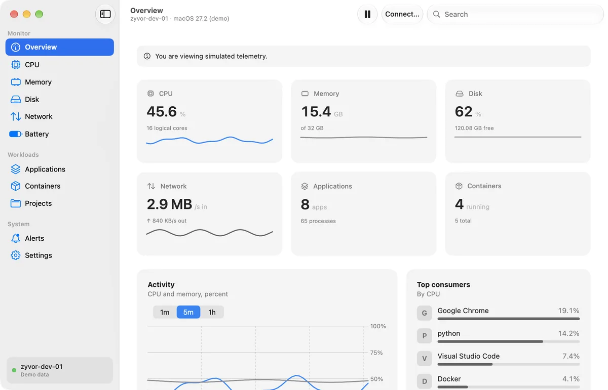
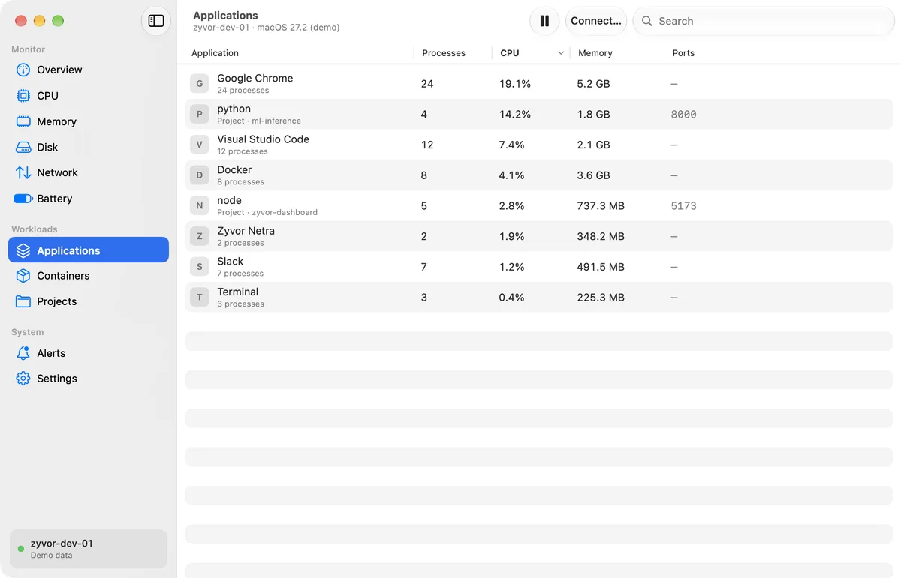
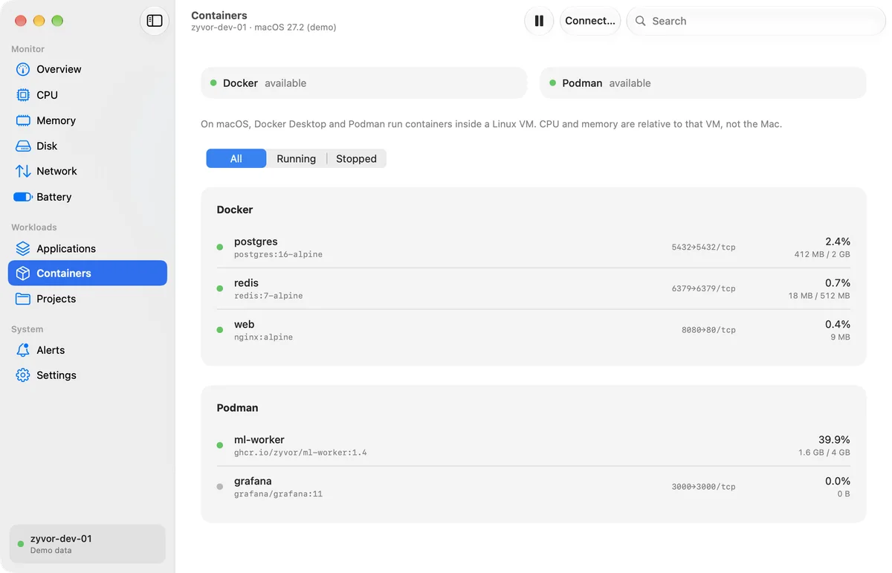
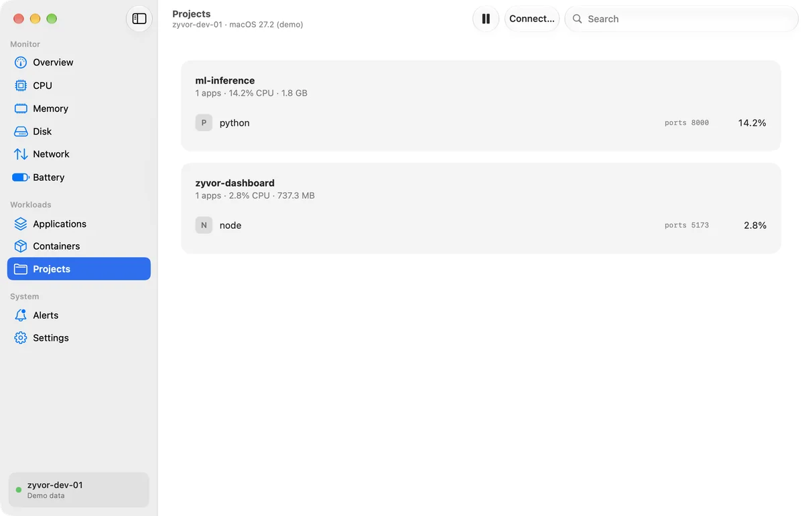
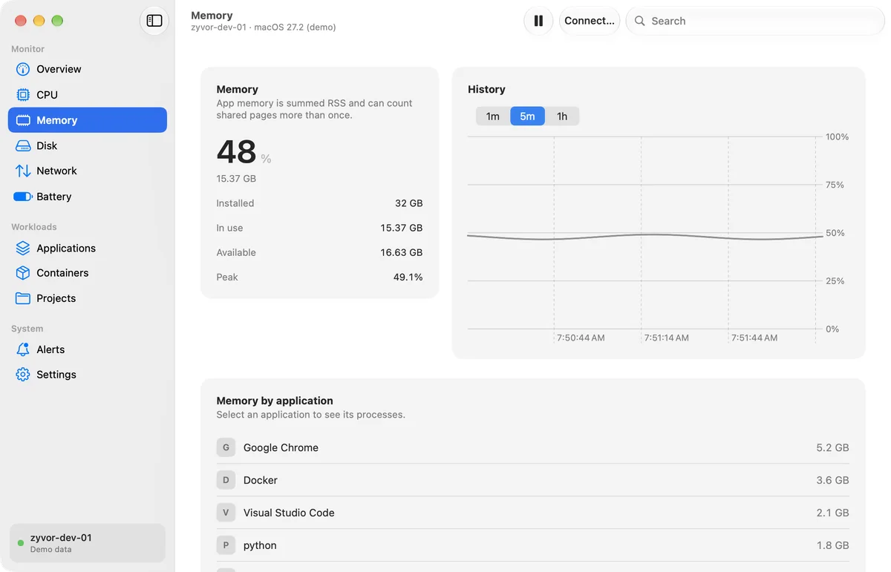
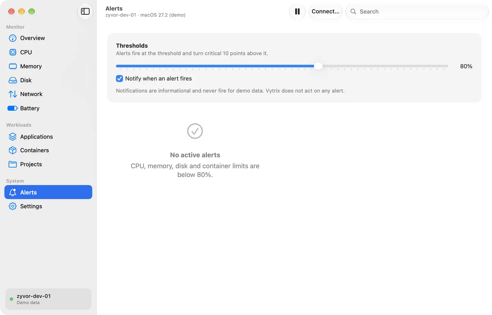

Zyvor · system monitor
Vytrix
See what your machine is really doing.
A read-only activity monitor for macOS. Applications grouped the way you think about them, processes, listening ports, project folders and containers, in one native window and the menu bar. It watches. It never kills, signals or changes anything.
Download the 30-day trialLearn more
macOS 26 or later · Apple silicon · Python 3.10+ · notarized · The app runs without a key. For a free 30-day trial key, email sales@zyvor.dev.

One window. Every question.
Which app is it? Which container? What is on port 5173? Vytrix answers from read-only readings, and never touches what it shows.
Features
Overview
Everything, at a glance.
CPU, memory, disk and network, and the busiest applications, on one screen. A counter that is not available is shown as absent, never as zero.

Applications
Which app is it?
Processes grouped by executable or .app bundle, with CPU and memory per application and a process sheet one click away.
Release notes
Containers
Which container?
Container state, CPU, memory against its limit and published ports for Docker and Podman, from read-only calls.

Projects
What is on port 5173?
Listening ports tied to the application and its project folder, so a stray dev server is easy to find.

Honest numbers
App memory is RSS, and it says so.
Memory is summed RSS and can count shared pages more than once. The screen tells you, next to the number.

Alerts
Tell me when.
Threshold alerts on CPU, memory, disk and containers, at a level you set. Notifications are informational. Vytrix does not act on any alert.

New in 0.9.0.
Capacity outlook
Local trend and anomaly detection that estimates time to limit for CPU, memory and disk. No telemetry leaves Vytrix.
Process inspector
Open any process from an application and see its details in one sheet.
CSV export of Applications
Export the grouped applications table to CSV for a spreadsheet or a ticket.
Menu bar disk and battery
Disk and battery rows in the menu bar popover next to CPU, memory and the busiest apps.
Safe to leave running.
Read-only
It watches. It never kills, signals or changes anything.
Local-first
History stays on your Mac.
Honest numbers
App memory is RSS. Not collected means absent, not zero.
Specs and requirements.
- Requires
- macOS 26 or laterApple silicon only. Python 3.10 or newer for the collector (
brew install python). - Build
- Signed and notarizedDeveloper ID signed. Notarized by Apple; macOS shows its standard first-open confirmation for apps downloaded from the internet.
- Version
- 0.9.0The app runs without a key. For a free 30-day trial key, email sales@zyvor.dev.
- Mode
- Read-onlyIt never kills, signals or changes anything.
- Mac app
- Menu bar, widget, ShortcutsMenu bar item, local notifications, a System widget and two Shortcuts actions.
- Data
- Local-firstHistory stays on your Mac.
Honest limits
History shows samples since the collector started, up to 30 days in its SQLite file. GPU, fans, audio and Bluetooth are not collected in this release. Per-app bandwidth is not collected, and container CPU and memory on macOS are relative to the Linux VM that runs Docker or Podman, not to the Mac. Notifications never fire for demo data.
Get started in three steps.
Download
Get
Vytrix-0.9.0.dmgfrom the release page. The SHA-256 is in the release notes and inVytrix-0.9.0.dmg.sha256.Install
Open the DMG and drag Vytrix to Applications. It requires macOS 26 or later on Apple silicon, and Python 3.10 or newer for the collector (
brew install python).Ask for a trial key
Write to sales@zyvor.dev for a free 30-day trial key. To keep using Vytrix afterwards, get a licence at zyvor.dev/buy.
Vytrix 0.9.0 for Mac · SHA-256
20f71768b880ed2d110e104f609126c069446dc8ea85f5f3a49b054b71bdee0cVerify: echo "20f71768b880ed2d110e104f609126c069446dc8ea85f5f3a49b054b71bdee0c Vytrix-0.9.0.dmg" | shasum -a 256 -c
Licence and pricing.
If you run it in production or commercially, buy a production licence: ₹1,999 per Mac per year including GST (about US$20). Teams of 5 or more Macs: ₹3,499 per Mac per year, by invoice. A 30-day trial key is free: sales@zyvor.dev. Earlier ₹899 Supporter purchases keep their perpetual grant for the versions released to date. Not for redistribution or resale. Need a USD invoice or a licence for several entities? Write to sales@zyvor.dev and we will send an invoice.
Signed & notarized
Developer ID signed and notarized by Apple. Requires macOS 26 or later on Apple silicon and Python 3.10 or newer.
₹1,999 per Mac per year incl. GST
Questions, answered.
Does Vytrix change anything on my Mac?
No. It is read-only: it never kills, signals or changes anything, and it does not act on any alert.
Is there a free trial?
Yes: a free 30-day trial key from sales@zyvor.dev.
Will macOS warn me when I open Vytrix?
The download is Developer ID signed. Notarized by Apple; macOS shows its standard first-open confirmation for apps downloaded from the internet. The SHA-256 is on the release page if you want to verify it.
Which macOS versions?
macOS 26 or later, on Apple silicon (no Intel build). The collector needs Python 3.10 or newer on your Mac (brew install python), or a collector running elsewhere.
What does it not collect?
GPU, fans, audio and Bluetooth are not collected in this release, and per-app bandwidth is not collected. A counter that is not available is shown as absent, never as zero.
Why does app memory look high?
App memory is summed RSS and can count shared pages more than once. Vytrix says so beside the number.
What is in the menu bar?
A menu bar item with CPU, host totals, alert count and the busiest apps, and as of 0.9.0 disk and battery rows. Closing the window keeps Vytrix in the menu bar; Quit stops it and its collector.
Are the screenshots a real machine?
No. Every screenshot on this page is the real app on simulated telemetry (demo data), not a capture of a real machine.